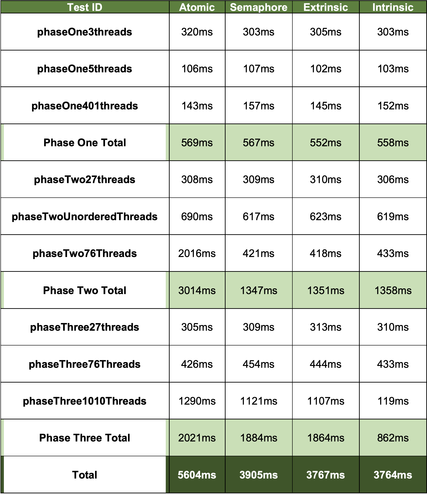

The testing is composed of 3 phases, where each phase groups the threads together differently. For each multithreading method, 9 tests were carried out, 3 tests on each phase. The table below summarizes the average time taken for the tests to finish. The average was taken out of 10 tests for each test. Print statements were included in the tests.
